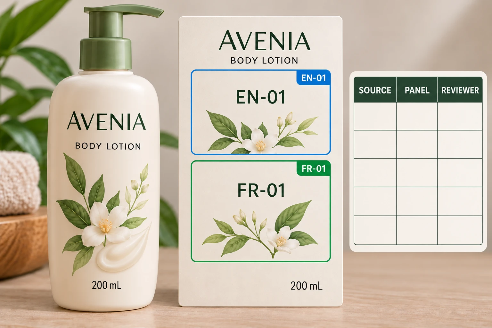

One translation folder is not one approved release
Start with the product version and intended artwork. List the language blocks required by the brand's responsible reviewer. Do not infer that requirement from a sales-country name or assume that the most recently modified document is approved.
Assign each block a stable internal reference. EN-01 and FR-01 can be simple editorial examples, but the team's actual convention should also distinguish product and revision where necessary. Keep a copy of the approved source, its owner and the approval scope.
Avoid copying text from a rendered picture when the approved editable source is available. If the only available reference is an image, record that limitation and ask the owner to supply or verify the exact text. Procurement should not quietly reconstruct controlled wording while trying to keep the design moving.
Map blocks before solving the space problem
Use the supplier's actual panel names or drawing references. If there are front and rear labels, give each a separate identity. If the design opens, identify every printable surface consistently; two people calling different surfaces the back makes comments difficult to resolve.
The expanded-content label guide considers whether added surfaces are useful and accessible. This article can apply to an ordinary two-label pack as well: it reconciles the approved text versions and their destinations, irrespective of construction.
Place every required block in the map, including repeated blocks. If the same approved phrase appears on a bottle and carton, list both destinations. One corrected instance does not establish that the other was updated. Conversely, two similar passages may intentionally differ; have the content owner determine whether they are linked.
Give reviewers a bounded assignment
The designer confirms placement and layout. A competent language reviewer checks the actual rendered wording and reading order. The brand's responsible product or compliance reviewer determines whether the supplied content and placement meet the project's requirements. Purchasing connects those acknowledgements to the file being ordered.
One person may hold several roles in a small business. The important point is that an approval states what was checked. An email saying the design looks good should not automatically approve a language that the sender cannot read.
Return corrections against the block ID and exact proof revision. Ask whether a comment changes wording, placement or presentation. That distinction prevents a designer from shortening approved copy as a layout correction without the content owner's agreement.
Build the reconciliation table
Use one row per block and destination. The following is a method, not an approved list of required cosmetic information.
| Field | Entry | Review question |
|---|---|---|
| Product version | Internal item and relevant market artwork | Is this block intended for this product? |
| Block reference | Stable ID and language | Can a comment identify the exact text? |
| Approved source | Document, revision and owner | Which wording is authoritative? |
| Destination | Artwork revision and named panel | Where must that wording appear? |
| Repeat locations | Other labels or packaging using the block | Does a correction affect more than one place? |
| Rendered proof | Exact export reviewed | Did the approved text survive placement? |
| Acceptance | Reviewer, scope and open issues | What can be released? |
First reconcile the source documents. Next place the blocks and export the proof through the printer's agreed workflow. Then review each destination against the approved source and record discrepancies. Correct the source or layout through its responsible owner, export again and check the affected result.
Do not release a block whose approved source is unclear. If the brand removes a language or changes its destination, record the responsible decision and any required follow-up. Hiding an unresolved paragraph outside the artboard is not a documented resolution.

Keep changes narrow without overlooking their reach
Consider a hypothetical fixed English-and-French lotion label. Only one approved French sentence changes. The map can identify the affected block and every artwork that uses it, allowing a focused correction rather than unnecessary editing of all English text.
A second range uses similar language blocks for several different formulas. The shared visual layout does not make the copy interchangeable. The team needs product-specific sources and a separate confirmation for each affected destination. This is where a spreadsheet that lists filenames alone provides too little information.
The skincare range guide addresses visual consistency. Keep that design system, but let the copy map preserve legitimate differences within it. A consistent brand does not require identical instructions for different products.
For cosmetic label production, send the container, dimensions, quantity per artwork and controlled copy sources. Include the destination map and unresolved blocks. Use the contact form to prepare a message, then send files by email or WhatsApp. The useful next step is a proof tied to identifiable approved content, with review responsibilities already assigned.